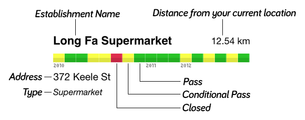

Dinesafe Surrey shows the history of all health inspections for every food establishment in Surrey. This app arranges those inspections in a timeline-like scorebar, so you can have a quick overview of an establishment's inspections.
Overview of Inspection History

More Info
Made by Matt Ruten in TorontoExtended by Dave Dumaresq of Cloud-Graf.com
- Twitter: @mattruten (Open in Twitter App)
- Email: matt@ruten.ca
- Twitter: @dfdumaresq (Open in Twitter App)
- Email: dave@cloud-graf.com
This app contains public sector Datasets made available by the City of Surrey. Visit www.surrey.ca